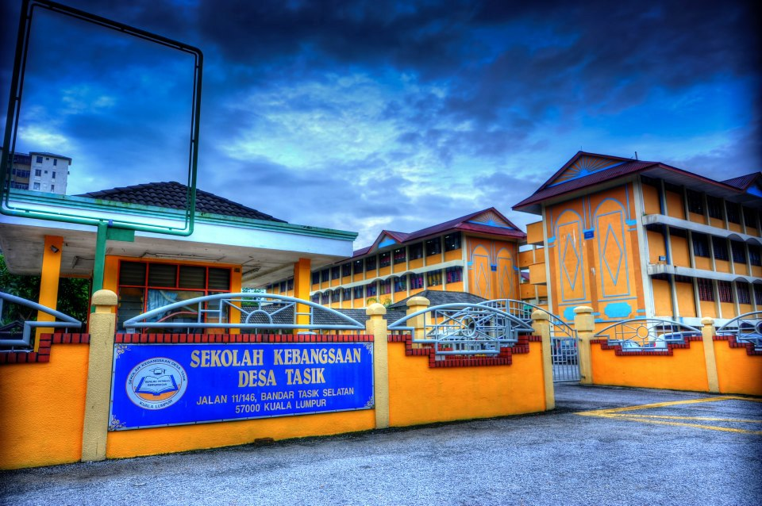
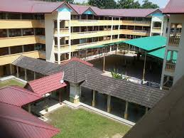
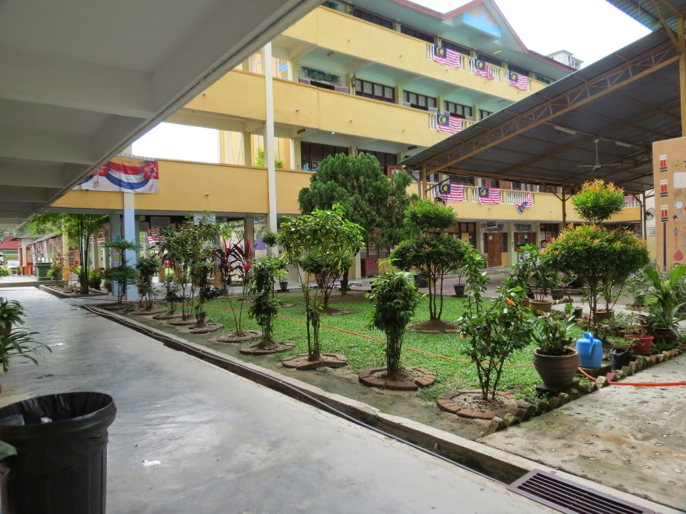
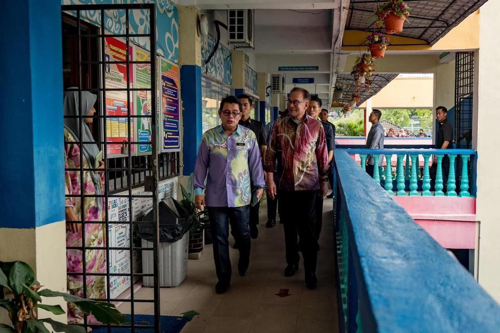
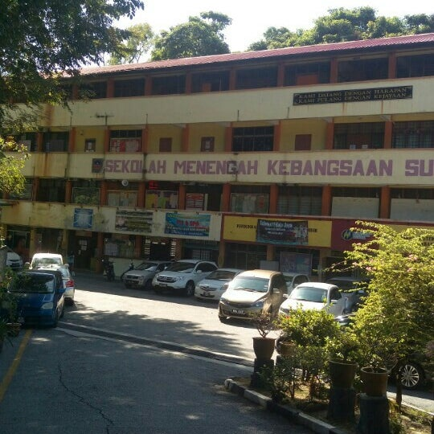
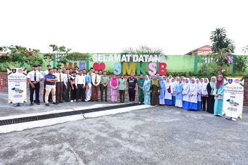
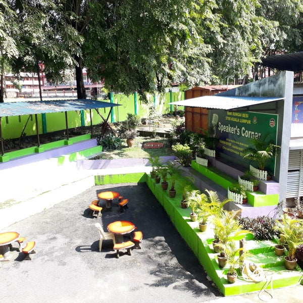
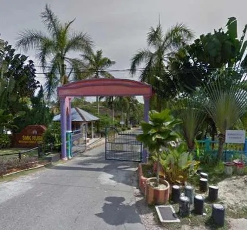
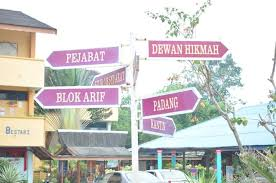
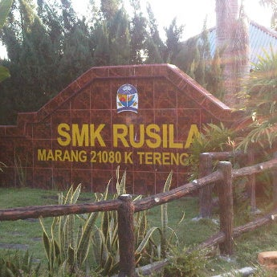

1. PRIMARY SCHOOL
Sekolah Kebangsaan Desa Tasik, Kuala Lumpur (6 years old-12 years old)




This is the primary school I attended for the first and last time. children in this school range in age from preschool to sixth grade, with the exception of PPKI, which serves special education children.I only have to walk to and from this school because it is close to my house. Since I don't have many friends, I don't have many memories from here. My primary education began in 2010 when I started pre-school. Then, in 2011, at the age of 7, I resumed my primary schooling as a grade 1 student.
Although not all of my classmates are close friends, I do have some. Even though I was continually being teased by them because I didn't have any friends at the time, I was content being by myself. Then, when I was ten years old, I also made a best friend out of a classmate. Despite her kindness, she is often the target of bullying, particularly body shaming. We grow closer every year, go everywhere together, and choose to ignore the opinions of others. She was my first and best friend for the entirety of my life, and I still hope we can get together.
2. FIRST HIGHSCHOOL
Sekolah Menengah Kebangsaan Sungai Besi (13 years old-14 years old)



From the age of thirteen (13) to fourteen (14), SMK SUNGAI BESI was my first high school. It's a little bit away from my elementary school, but it's also close to my house. Due to its distance, I occasionally walked there on my own or was sent there by my father. In my first high school, there were two sessions: one in the evening for students in forms one and two, and another in the morning for students in forms three through five.Additionally, non-Malay students from this school, including those from China, India, Sabahan, and Sarawak, have a separate class.
I made a few acquaintances here in high school and I started out being friendly with everyone. My acquaintance attends both my class and another class. From this point on, I feel content because I've managed to make a large number of close friends, both guys and females. I'm happy that, despite everyone's busy schedules with their studies, our friendship has lasted this long. Furthermore, we always get together when we have a long break, but it can be challenging to make sure that everyone in the group gathers at the same time.
I have been a school librarian here since first form (1). I was chosen to oversee the school library's evening programs in form two (2). However, I have to relocate to Terengganu, thus I am unable to finish my studies here. Yes, even though I have only been studying here for two years, I have a lot of memories from this time that I will never forget.
3. SECOND HIGHSCHOOL
Sekolah Menengah Kebangsaan Rusila, Marang Terengganu (15 years old-16 years old)



I'm a form three student in 2019 and I have to take the PT3 exam. 2019 saw my relocate here, where I now reside with my aunt's family. Here, I continue my education and succeed in forming friendships with my classmates. Although most of my classmates are really nice, there are still a few mischievous boys who harass and shame me for being too tall. That doesn't bother me because I ignore them and am accustomed to it.
Additionally, I'm merely friends with my classmates, but after Form Four, I made friends with other people in the class. My three years there have been particularly valuable to me since everyone there is enjoyable and supportive of one another. If I get the chance to return to Terengganu, I also plan to catch up with my close friends, and I hope that our friendship will endure forever.
4. UNIVERSITY
Universiti Teknologi Mara, Merbok Kedah (18 years old-21 years old)
This is where I currently study—UITM Kedah. Now, I'm enrolled in semester four(4) of the Diploma in Information Library. I would want to talk about the course that I have completed. My choice to study in Kedah, which is somewhat far away from my home, surprised me a lot at first. This course is my second to final option at 'UPU'. I chose to accept this course after getting some advice from my family, and I'm hoping that it's the right choice for me.
We chose to attend the same class, so my roommate and I were just being friends for the first semester. I've spent most of the semester with my roommate and haven't given a damn about the other student. I started making new friends in semester two (2), both with my classmate and other students. Even if our classes are different, we constantly support one another, especially when it comes to homework. Getting to know them has been a lot of fun, and I'm continuing at UITM Kedah to get my diploma next year.